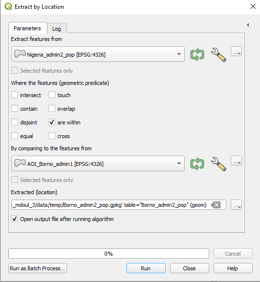
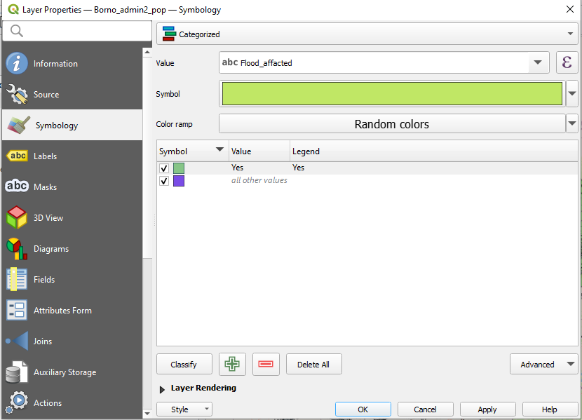
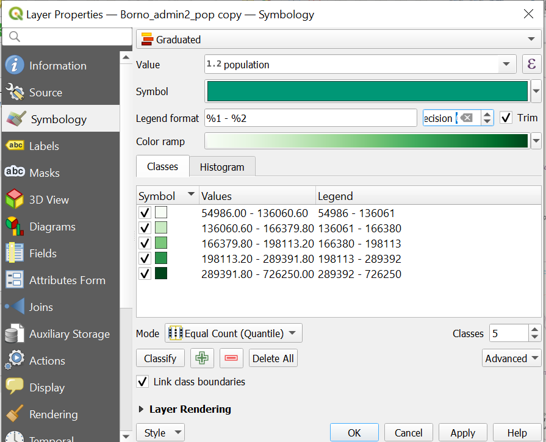
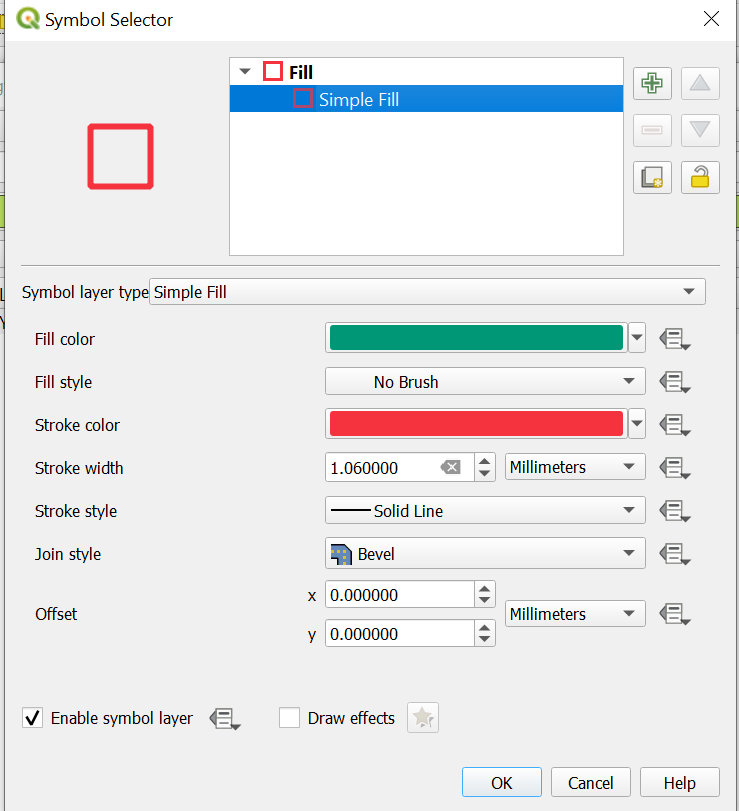

Exercise: Nigeria Floods#
Aim of the exercise:#
In this exercise, you will learn how to digitise the positions of settlements by creating new datasets. Furthermore, you will learn how to enrich the simple geodata set with additional information.
Relevant Wiki Articles#
Data sources#
Download the data folder here and save it on your PC. Unzip the .zip file. The folder is called “Modul_3_Exercise_1_Flood_Nigeria” and contains the entire standard folder structure with all data in the input folder and the additional documentation in the documentation folder.
Nigeria: Administrative Division with Aggregated Population (“kontur_boundaries_NG_20230628.gpkg”)-Kontor
Nigeria : Flood data (“Nigeria_flood_2022_affacted_population”) - UN OCHA. This dataset was manipulated for training purposes.
Task#
Our goal is to produce an overview of the impact of the 2022 flood in the state of Burco in Nigeria. To this end, we will visualise the state and the affected districts, plus we will digitise communities which are reportedly affected.
Open QGIS and create a new project by clicking on
Project->NewOnce the project is created save the project in the “project” folder of the exercise “Modul3_Exercise_1_Flood_Nigeria”. To do that click on
Project->Save asand navigate to the folder. Name the project “Nigeria_Borno_flood_2022”.Load the GeoPackage “kontur_boundaries_NG_20230628.gpkg” in your project by drag and drop (Wiki Video). Or click on
Layer->Add Layer->Add Vector Layer. Click on the three points and navigate to “kontur_boundaries_NG_20230628.gpkg”. Select the file and click
and navigate to “kontur_boundaries_NG_20230628.gpkg”. Select the file and click Open. Back in QGIS clickAdd(Wiki Video). This dataset contains all administrative division areas (admin 0 to 5) with the respective population of the areas.
Attention
GeoPackage files can contain multiple files and even entire QGIS projects. When you load such a file in QGIS a window will appear in which you have to select the files you want to load in your QGIS project.
First, we want to export Borno state from kontur_boundaries_NG_20230628 to have it as a stand-alone vector layer. To do that,
Open the attribute table of “kontur_boundaries_NG_20230628” by right click on the layer ->
Open Attribute Table(Wiki Video).Find the row of Borno state and mark it by clicking on the number on the very left-hand side of the attribute table. The row will appear blue and the area of Borno state will turn yellow on the map canvas. You can right-click on the row and click
Zoom to Feature(Wiki Video). .Now right-click on the layer in the Layer Panel and click on
Export->Save Selected Features as. We want to save Borno as a GeoPackage, so adjustFormataccordingly. Click on the three points and navigate to yourtempfolder. Here you can give it the layer the name “AOI_Borno_admin1” and clickSave. Now you should see the same name in theLayer namefield. Clickok(Wiki Video) .
In the next steps, we want to create a vector layer with admin 2 areas or in Nigeria called Local Government Areas (LGA) with the population in our project. Since we only want the LGAs we need to export those from the original dataset.
Open the attribute table of the layer “kontur_boundaries_NG_20230628” by right-clicking on the layer ->
Attribute Table(Wiki Video). Check out the attribute table. You see two columns of admin levels “admin levels” and “osm_admin_levels”. Both have different values. In the metadata of the dataset on HDX, we can see that the column “osm_admin_levels” refers to the admin levels used in OpenStreetMaps (OSM). There is a list of which official admin levels correspond to which OSM admin levels. The LGAs correspond to osm admin level 6. This means we want to export all features withosm_admin_level=6.To export exactly these features we will use the tool
Extract by attribute. Open theProcessing Toolbox(here is how) and search for the tool. Open the tool and choose asInput Layerthe “kontur_boundaries_NG_20230628.gpkg“ layer. UnderSelection attributechoose the columnosm_admin_level. TheOperatorhas to be=and asvaluewe use6since the LGAs have the osm_admin_level 6.Under
Extracted (attribute), click on the three dots ->Save to GeoPackage, navigate to yourtempfolder, and call the new layer “Nigeria_admin2_pop”. ClickSave. Give the layer the same name ( “Nigeria_admin2_pop”). ClickOKand then clickRun.
Now we need to extract all LGAs in Borno. For that, we will use the Tool
Extract by Location(Wiki Video) . Search the tool in theProcessing Toolboxand open it.As
Input Layerwe will use “Nigeria_admin2_pop”.For
By comparing to the features fromwe use the layer “AOI_Borno_admin1”.As
Geometric predicatewe useare within.To save the output click on the three points at
Extract (location)->Save to GeoPackageand navigate to yourtempfolder. Save the new layer under the name “Borno_admin2_pop”. Give the new layer the sameLayer nameand clickRun.Open the Attribute table of the new layer. You should have 27 features.
{kind=link}

We have our admin areas in place and can now start to enrich these layer with additional data regarding the flood of 2022. Open the Excel or pdf file “Nigeria_flood_2022_affacted_population” and open the sheet Borno. You find a table with the LGAs and communities which were affected by the flood. Now we want to add some of the information to our “Borno_admin2_pop” layer. For that, there are two ways. One simple, but more time-consuming, and one more complicated, but much faster. We will show the easy way, but in the dropdown below you can find the tutorial for the advanced way as well.
Open the attribute table of “Borno_admin2_pop” and activate the editing mode by clicking on
 (Wiki Video). Now you are able to edit the data directly in the table.
(Wiki Video). Now you are able to edit the data directly in the table.First, we add a new column with the name “Flood_affacted”. To do so, click on
 . In the
. In the Add fieldwindow, you have to add the name and set theTypetoText(string). ClickOK(Wiki Video) .In the next step check in the Excel/PDF table which LGAs were affected and put “Yes” in the attribute table for those LGAs.
When you are done, click
 to save your edits and switch off the editing mode by again clicking on (Wiki Video).
to save your edits and switch off the editing mode by again clicking on (Wiki Video).
To visualise the enriched data set, we use the function “Categorized Classification” function. This means that we select a column from the attribute table and use the content as categories to sort and display the data (Wiki Video).
Right-click on the layer “Borno_admin2_pop” in the
Layer Panel->Properties. A new window will open up with a vertical tab section on the left. Navigate to theSymbologytab.On the top you find a dropdown menue. Open it and choose
Categorized. UnderValueselect “Flood_affacted”.Further down the window, click on
Classify. Now you should see all unique values or attributes of the selected “Flood_affacted” column. You can adjust the colours by double-clicking on one row in the central field. Once you are done, clickApplyandOKto close the symbology window.
{kind=link}

Next, we want to visualise the affected communities which are listed in the Nigeria_flood_2022_affacted_population table. To find these communities in QGIS, we need two things. An OpenStreetMap base map and the plugin
OSM Place Search.To add the OSM as a base map click on
Layer->Add Layer->Add XYZ Layer…. ChooseOpenStreetMapand clickAdd. Arrange your layer in theLayer Panelso the OSM is at the bottom (Wiki Video) .
Tip
You cannot interact with a base map!
To add the plugin
OSM Place Search, click onPlugins->Manage and Install Plugins…->Alland search forOSM Place Search. Once you have found it, click on it and clickInstall Plugin. You can open theOSM Place Search Panellike every other panel by clicking onView->Panelsand checkingOSM Place Search Panel(Wiki Video).In the panel, you can search for places on the OpenStreetMap by typing the name of the place in the search bar. Often it makes sense to add additional information like the name of the country. For example, try “Laujeri Bulama, Nigeria”.
Now we have all our tools in place. In the next step, we create a new point vector layer from scratch to digitise the location of the affected communities.
Click on
Layer–>Create Layer->New GeoPackage Layer(Wiki Video)
Under
Databaseclick on and navigate to tempfolder. Give the new dataset the name “Borno_affected_communities_point”. ClickSave.
Geometry type: SelectPoint
Under
Additional dimensionyou should always make sure that you checkNone.Select the coordinate reference system (CRS) “EPSG:4326-WGS 84”. By default, the QGIS selects the project CRS.
Under
New Fieldyou can add columns to the new layer. Add the column “Name”.Name= “Name”Type: SelectText DataClick on
Add to Fields List to add the new column to the Fields List.Click
OK.
Your new layer will appear in the
Layer Panel

Currently the new “Borno_affected_communities_point” is empty. To add features we can use the
Digitizing Toolbar. If you cannot see the toolbar, useView->Toolbarsand checkDigitizing Toolbar(Wiki Video).
Select the point layer “Borno_affected_communities_point” in the Layer panel. Go to the digitalisation toolbar and click on
. Now the layer is in the editing mode .Search an affected community based on the table “Nigeria_flood_2022_affacted_population”. Once you have found one, click on
 . Left-click on the feature you want to digitalise.
. Left-click on the feature you want to digitalise.Once you click, a window will appear
Borno_affected_communities_point Feature Attribute. Here you can add the name of the location.Repeat the same process for as many communities as you like.
Once you are done with digitising click on
to save your edits.Click again on
to end the editing mode.
In this step, we want to add information about the population to the map. This will help us to visualise where the most people are potentially affected. Since the layer “Borno_admin2_pop” contains this information we can dublicate this layer.
To do that right click on the layer ->
Duplicate Layer. The name of the new layer will be “Borno_admin2_pop_copy”.
Since absolute population numbers are natural numbers, we cannot use categorised classification. Instead, we use the option
Graduated(Wiki Video).Right-click on the layer “Borno_admin2_pop_copy” in the
Layer Panel->Properties. A new window will open up with a vertical tab section on the left. Navigate to theSymbologytab.On the top you find a dropdown menue. Open it and choose
Graduated.Under
Valueselect “Population”.Color ramp: Select a white-to-green color ramp. Since we want to visualise the population, it is important to use neutral colours.Mode: Equal Count (Quantile)Classes: 5Click
ClassifyClick
Apply
{kind=link}

QGIS created now five classes covering the entire range of population numbers in Borno state. Click on the
HistogramTab ->Load Values. Here you see the distribution of values in the dataset and the limits of the classes. We see that most LGAs have a population below 300 people. Try out some of the other modes of classification, such as natural breaks or equal intervals.

To visualise “Borno_admin2_pop” (showing affected LGAs) and “Borno_admin2_pop_copy” (showing population data) together, we need to change the symbology of “Borno_admin2_pop”. First, right-click on the layer “Borno_admin2_pop” in the
Layer Panel->Properties. A new window will open up with a vertical tab section on the left. Navigate to theSymbologytab. Currently, we use theCategorizedclassification. We want to keep that. However, we only want to show affected LGAs. Hence, we uncheck the row that corresponds to the LGAs withoutAffected=Yes.Right-click on the layer “Borno_admin2_pop” in the
Layer Panel->Properties. A new window will open up with a vertical tab section on the left. Navigate to theSymbologytab.Then, do a double-click on the
Yesrow. Here we have two options. We can use a grid or only the borders.To use a grid scroll down and select one that suits you. Then click
OK.

To only use borders, click on
simple fill->Fill styleand selectNo Brusch. Adjust theStroke Colorto a red or another bride colour. Increase theStroke widthto make the borders bigger. Then clickOK.
{kind=link}

For a more detailed idea of the flood extend we can load the layer “VIIRS_20220901_20220930_MaximumFloodWaterExtent_Nigeria.shp” which shows the maximum extent of surface water between 9th and 30th October 2022. If you like you can also load “VIIRS_20220901_20220930_PermanentWater_Nigeria.shp”. This layer shows lakes and other permanent surface water features. Once you have loaded the layers in QGIS, you can see that they are correctly displayed. However, upon checking the layer information, you can see that the new layers have a different Coordinate Reference System (CRS). They have the EPSG Code 9707 whereas our project has 4326 (Wiki Video).
Right click on the data layer, click on “Properties”.
The “Layer Properties” Window of the data layer will open. Click on “Information”.
Under the headline “Coordinate Reference System (CRS)” you find all information about the CRS. The most important are:
Name: Here you find the EPSG Code
Unites: Here you can find whether it is possible to use meters with this data layer or latitude and longitude.
This will be a problem as soon as we do something different then just displaying the layers. Since we want to manipulate the layers in the next step we need to reproject them first (Wiki Video).
Click on the
VectorTab ->Data Management Tools->Reproject Layeror search for the tool in theProcessing Toolbox.As
Input layerselect “VIIRS_20220901_20220930_MaximumFloodWaterExtent_Nigeria.shp”Select as target CRS/ EPSG-Code 4326.
Save the new file in your
tempfolder by clicking on the three dots next to Reprojected, specify the file name as “Flood_extand_Nigeria_october_2022_reprojected.Click
RunDelete the old layer from the layer panel by right click on the layer ->
Remove layer.
The flood extend layer covers the entirety of Nigeria. We can use the
Cliptool to cut it to the shape of Borno state (Wiki Video).Open the
Processing Toolbox(here is how) and search for theCliptool.
Note
There are two versions of the
Cliptool. Since we work with vector data, make sure to use the one under “Vector overlay”.Input layer: “VIIRS_20220901_20220930_MaximumFloodWaterExtent_Nigeria.shp”Overlay layer: “AOI_Borno_admin1”To save the output click on the three points at
Clipped->Save to GeoPackageand navigate to yourtempfolder. Save the new layer under the name “Flood_extend_october_2022_reprojected_Borno”. Give the new layer the sameLayer nameand clickRun.

Great, we have done our visualisation. WELL DONE! Your results should look similar to the image below.